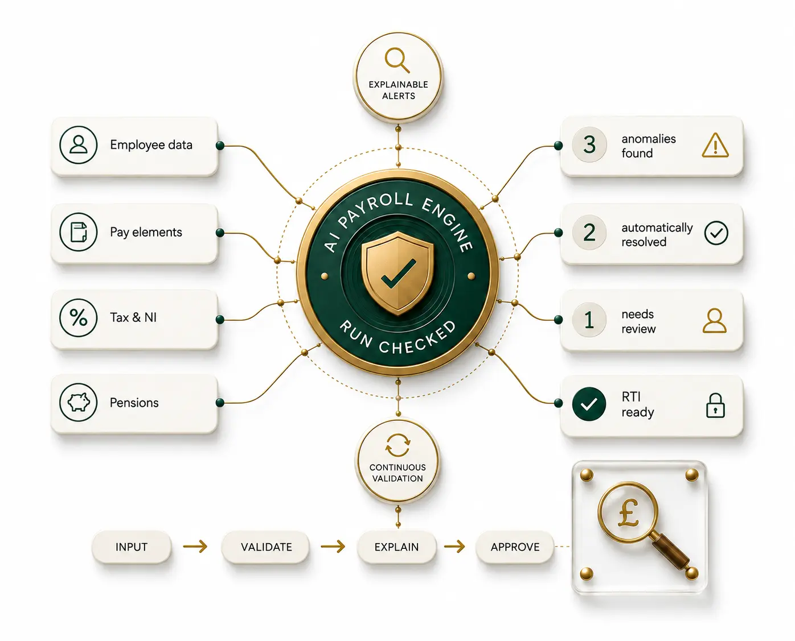

Detect
Surface unusual payroll activity.
Identify values, movements and patterns that may warrant a closer look.
Oceans Pay combines intelligent validation with practical automation to help payroll teams identify what needs attention, reduce repetitive administration and keep payroll moving.

Payroll teams process large amounts of information every period. The challenge is often not calculating payroll — it is finding the changes, exceptions and unusual activity that require attention.
Oceans Pay brings intelligence into that review process.
Identify values, movements and patterns that may warrant a closer look.
Apply intelligent checks to help highlight missing, inconsistent or unexpected information.
Give payroll users clearer context around exceptions so they can investigate more efficiently.
Bring records requiring review forward instead of treating every payroll item the same.
Oceans Pay helps bring unusual activity and payroll exceptions to the surface so teams can spend less time manually checking routine information.
The platform highlights what needs attention. Your payroll team decides what happens next.
Payroll contains many routine administrative steps around the calculation itself.
Oceans Pay is designed to reduce that repetition through automation and structured workflows.
Automate the routine. Keep control of the important decisions.
Intelligence is designed to support the wider Oceans Pay experience rather than operate as a separate product.
Help identify unusual information and exceptions during processing and review.
Bring payrolls requiring attention to the surface across a wider portfolio.
Support the mapping, validation and review of payroll information moving into Oceans Pay.
Reduce repetitive analysis and make relevant payroll information easier to work through.
One platform. Intelligence where it adds value.
Payroll is regulated, sensitive and consequential.
Oceans Pay is designed to use intelligent technology where it can improve visibility, validation and efficiency while keeping payroll teams in control of review and decision-making.
AI supports the payroll professional. It does not replace them.
Core payroll processing follows established payroll logic.
Issues are surfaced for review rather than hidden behind automation.
Payroll professionals remain responsible for decisions requiring judgement.
Relevant payroll actions remain part of the wider controlled workflow.
See how Oceans Pay uses validation and automation across payroll processing, multi-company management and migration.